|
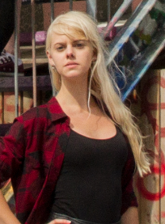
Isabel Runneberger
Team Leader
Evil Overlord and Biotechnology Msc student from Stockholm. Has a pet Lynx that he rides to school every day. E-mail: risabel@student.chalmers.se |
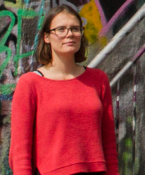
Amanda Ristinmaa
Team Leader
The nerdy girl in charge of communications and being the mom of the team. Also part-time wiki editor and modelling tryhard. Biotech Msc student working on master thesis, sponsored by coffee. E-mail: amandar@student.chalmers.se |
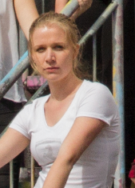
Julia Larsson
Wet lab, modeling and wiki
Third year Biotech Bsc student who will take a master in Engineering Mathematics. Joined iGEM to get more experience the lab, since I’m leaving that world behind soon. Took the honorable position as wiki-master when no one else could. I think I did a decent work. E-mail: jullars@student.chalmers.se |
|
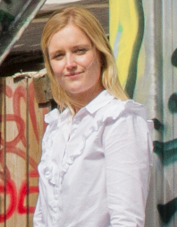
Julia Jonsson
Wetlab, Social media, Human Practices
Master student of Molecular Biology at GU but likes to hang out with Chalmers people so joined IGEM team to have fun and learn. E-mail: jojulia@student.chalmers.se |
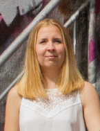
Sofie Gunnarsson
Wetlab, Funding
Youngest member of the team. Handsome and humble, curious and just slightly lost. Joined iGEM to find out what to do in the future. E-mail: sofiegu@student.chalmers.se |
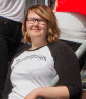
Elin Johansson
Wetlab, Human practices
The computer nerd of choice in the group and wears chainmail for breakfast. Wiki creating machine fueled by coffee. E-mail: eljoh@student.chalmers.se |
|
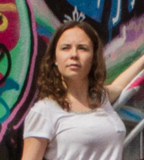
Tuva Wegnelius
Wetlab, Human practices
When not in the lab he is either playing guitar or working on growing his hair. Will upload his brain to the internet before he dies. E-mail: tuvaw@student.chalmers.se |
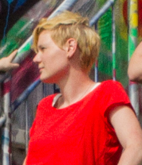
Linnea Kristenson
Wetlab, Human Practises
The only Swedish girl of the team and a first year Biotech master student. Stubborn and nerdy choir girl from the best coast of Sweden! E-mail: linkris@student.chalmers.se |
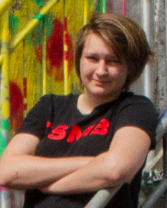
Tove Widén
Wetlab, Human practices
I am LJ from South Korea and just finished my first year in the Biotechnology Master's program. So excited to be in the Chalmers iGEM team E-mail: wtove@student.chalmers.se |
|
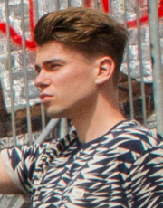
Axel Hedin
Wetlab, Human practices
Born and raised in Gothenburg! Given up his sailor heritage to spend all his time in the lab to represent his hometown in iGEM E-mail: alexhe@student.chalmers.se |
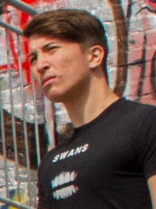
Angelo Limeta
Wetlab, modeling
3rd year biotech student. Will convert you to the cult of Håkan Hellström by running in slow motion while waving his golden brown hair E-mail: angelol@student.chalmers.se |